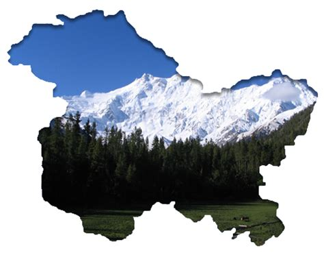

Jammu and Kashmir

Description of the state
- Jammu has historically been the capital of Jammu Province and the winter capital of the princely state of Jammu and Kashmir (1846–1952).
- The early history of Jammu is relatively unknown. According to Tarikh-i-Azmi, Jammu came into existence around 900 CE. The state of Durgara (modern forms "Duggar" and "Dogra)") is also attested from around this time. The capital of the Durgara state at that time is believed to have been Vallapura (identified with modern Billawar). Its rulers are repeatedly mentioned in Kalhana's Rajatarangini. Babbapura (modern Babor) is another state mentioned in Rajatarangini, some of whose rulers occur in the Vamshavali (family chronicles) of later Jammu rulers. These rulers are believed to have enjoyed almost independent status and allied themselves with the Sultans of Delhi. Raja Bhim Dev is prominently mentioned in the Delhi chronicles as a supporter of Mubarah Shah (r. 1421–1434).
- Jammu is mentioned by name in the chronicles of Timur (r. 1370–1406), who invaded Delhi in 1398 and returned to Samarkand via Jammu. In the Mughal chronicles of Babur in the early 16th century, Jammu is mentioned as a powerful state in the Punjab hills. It is said to have been ruled by Manhas Rajputs. Emperor Akbar brought the hill kingdoms of the region under Mughal suzerainty, but the kings enjoyed considerable political autonomy. In addition to Jammu, other kingdoms of the region such as Kishtwar and Rajauri were also prominently mentioned. It is evident that the Mughal empire treated these hill chiefs as allies and partners in the empire.
- After the decline of the Mughal power in the 18th century, the Jammu state under Raja Dhruv Dev of the Jamuwal (Jamwal) family asserted its supremacy among all the Dugar states. Its ascent reached its peak under his successor Raja Ranjit Dev (r. 1728–1780), who was widely respected among the hill states. Ranjit Dev promoted religious freedom and security, which attracted a large number of craftsmen and traders to settle in Jammu, contributing to its economic prosperity.